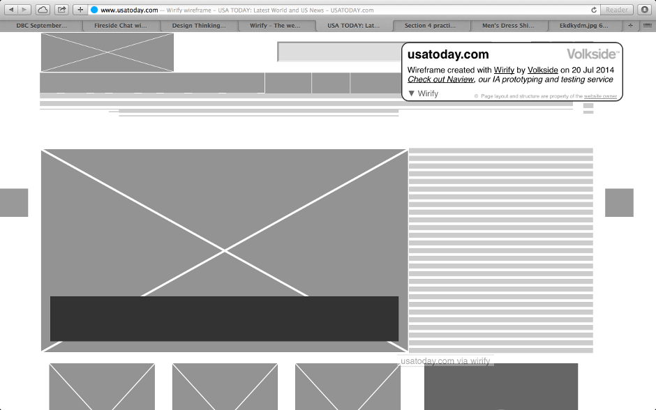

The challenge that this site faces is that the designers do not want the user to navigate away from the site. How this is dealt with is when an user clicks on a link, instead of opening another window or navigating away from the present landing page, the link will open in a 'window' just above the current page. The user can still see the page below. Typically when a user lands a page there are more than one desired link. Most time, when a user is navigated away from the site the user will get distracted with other links and therefore end up leaving the orginale site all together. This eliminates this and keeps the user at the site.
The example above is a screen shot from Wifify on how the designers have wireframed the USAToday site. The site is clean with not a lot clutter. Easy to read.